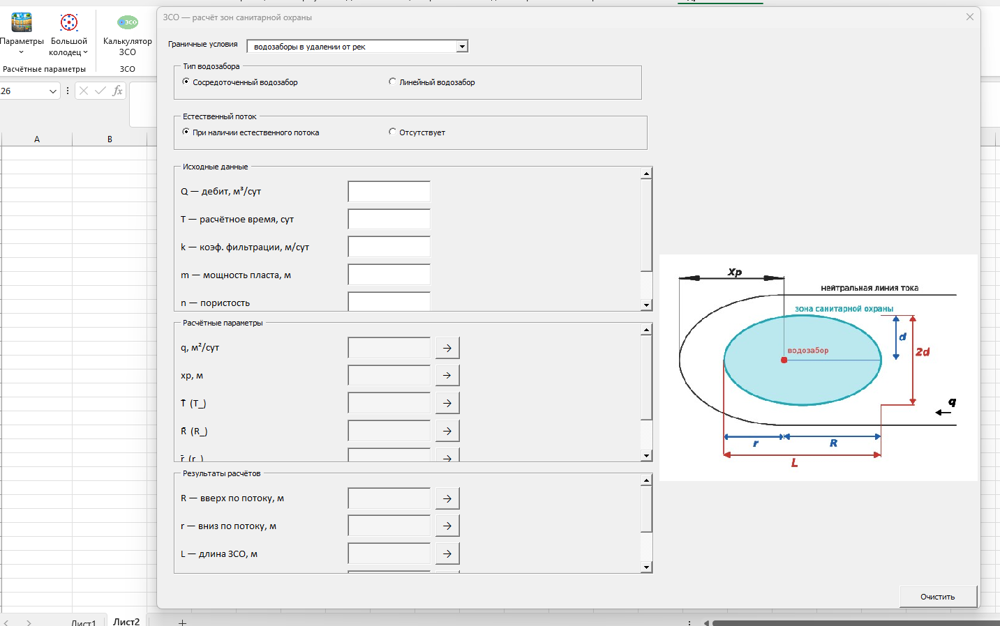
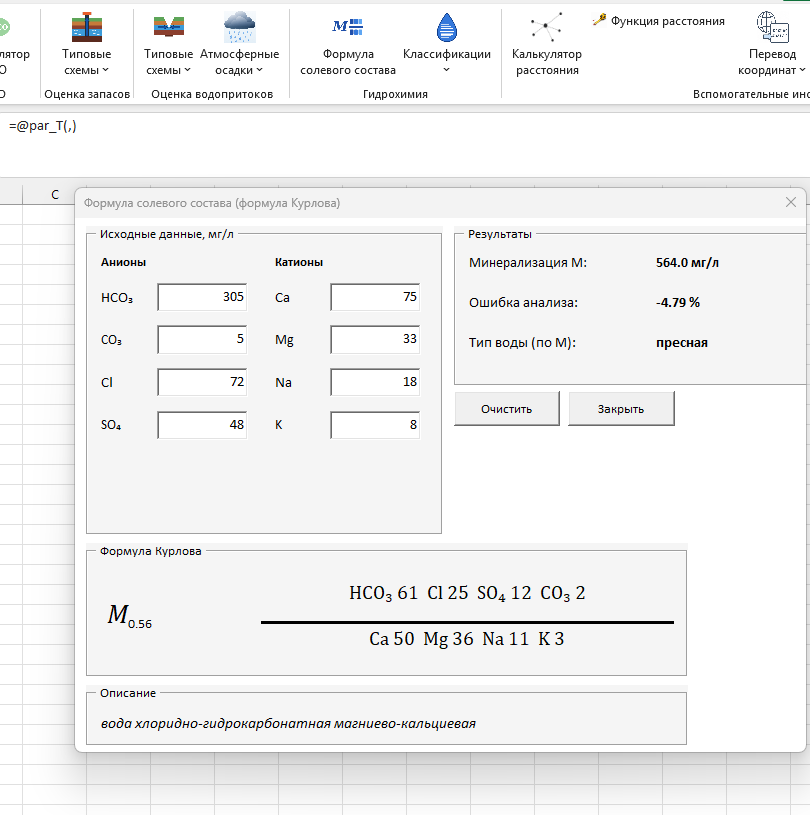

Форма расчёта ЗСО: ввод параметров водозабора и автоматическое построение схемы зоны санитарной охраны. Поддерживает сосредоточенный и линейный водозабор, с учётом естественного потока и без него.


Расчёт минерализации и солевого состава воды по содержанию основных анионов (HCO₃, CO₃, Cl, SO₄) и катионов (Ca, Mg, Na, K) — с готовым текстовым заключением о типе воды и проверкой сходимости анализа.
Классификации по различным признакам — минерализации и pH — доступны прямо из меню «Классификации».
Функция type_M: от «ультрапресных вод» до «крепких рассолов» по минерализации в г/л.
Функция type_pH: от «сильнокислых» до «сильнощелочных» вод по величине pH.
Агрегатор данных, перевод координат, номенклатура карт и конвертер размерностей.